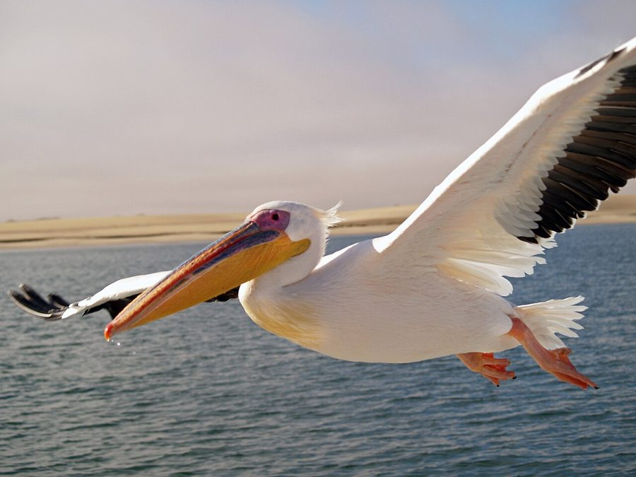

हवासीलGreat White Pelican
Pelecanus onocrotalus · Pelecanidae · BRD-0372

- Scientific name वैज्ञानिक नाम
- Pelecanus onocrotalus Linnaeus, 1758
- Family कुल
- Pelecanidae
- Hindi हिंदी
- हवासील
- Local names स्थानीय नाम
- hawasil, gagunber, gang goya, great white pelican
- Status here यहाँ की स्थिति
- native
- Movement आवागमन
- Winter visitor
- Known from कहाँ दर्ज
- Others have published records from the Basti–Ayodhya districts बस्ती–अयोध्या के ज़िलों से दूसरों के प्रकाशित अभिलेख
- IUCN IUCN
- LC
- Review समीक्षा
- not yet reviewed
When to look कब देखें
Winter visitor शीतकालीन प्रवासी. Expected mainly in January, May, November, December. मुख्यतः जनवरी, मई, नवंबर, दिसंबर में अपेक्षित।
Breeds from Hungary to the lakes of Central Asia; winter visitor to northern India (Baker 1929). GBIF records in Uttar Pradesh fall in January, May, November, and December. All migrants and visitors →
Tell it apart from इनसे अलग पहचानें
हवासील / Great White Pelican
Pelecanus onocrotalus Linnaeus, 1758 — Pelecanidae
हवासील — विशाल आकार का जलीय पक्षी जो सर्दियों में उत्तर भारत के बड़े जलाशयों, झीलों और नदियों पर आता है। इसका पूरा शरीर सफेद होता है जिस पर हल्का गुलाबीपन झलकता है, और चोंच के नीचे एक बड़ी पीली थैली होती है जिसमें यह मछलियां पकड़ता है। उड़ान के दौरान इसके डैनों के सिरे काले दिखाई देते हैं। यह शांत स्वभाव का पक्षी है और खुले पानी में तैरते हुए समूह में शिकार करता है।
Quick Identification त्वरित पहचान
| Feature | Description |
|---|---|
| Habit | Enormous aquatic bird swimming buoyant on deep water or soaring high on broad wings |
| Plumage | White plumage suffused with rosy-pink on head, neck, crest, back, scapulars, and breast (Baker 1929, p. 271) |
| Wing Pattern | Primaries black with white shafts; secondaries black with white outer webs and narrow black edge (Baker 1929, p. 271) |
| Bill & Pouch | Bill plumbeous-blue mottled white with red nail; lower mandible blue basally, yellow terminally; pouch yellow (Baker 1929, p. 271) |
| Fore-neck Plumes | Lanceolate feathers at base of fore-neck yellow-ochre or tan-yellow (Baker 1929, p. 271) |
| Bare Parts | Pouch, face and orbital skin yellow, brighter in breeding season; legs and feet fleshy-pink with yellow webs (Baker 1929, p. 271) |
Field tip: Look for an immense white waterbird swimming high in the water, showing black flight feathers contrasting with white underwings in flight (Baker 1929, p. 271).
हिंदी — कैसे पहचानें:
भारी शरीर, गुलाबी चमक वाला सफेद बदन, काले डैनों के सिरे और चोंच के नीचे पीली झिल्लीदार थैली देखकर इसे आसानी से पहचाना जा सकता है (बेकर 1929)।
Morphology आकारिकी
Measurements as given by Baker (1929) for the Western White Pelican (Pelecanus onocrotalus):
| Measurement | Range |
|---|---|
| Biometrics | Wing, ♂ 700 to 730 mm., ♀ 640 to 680 mm.; tail 190 to 210 mm. ; tarsus about 130 to 140 mm. ; culmen, ♂ 430 to 450 mm., ♀ 390 to 400 mm. (Baker 1929) |
Stuart Baker (1929, p. 271) detailed the adult plumage: "Primaries black with white shafts ; secondaries black but with much white on the outer webs, often extending to the inner also ; there is also a sharply-defined but narrow black edging to the secondaries and sometimes to the scapulars ; remaining plumage white, the whole head, neck and long crest suffused with rosy-pink, which extends to the back and scapulars and breast ; at the base of the fore-neck the long lanceolate feathers are yellow-ochre or tan-yellow."
Colours of soft parts: "Iris red to crimson ; bill plumbeous-blue, mottled with white along the centre and with the nail and edges of both mandibles red ; the lower mandible is blue on the basal, yellow on the terminal half ; pouch, face and orbital skin yellow, brighter in the breeding-season; legs and feet fleshy-pink, the webs yellow" (Baker 1929, p. 271).
Vocalisations: Usually silent away from breeding colonies, uttering only low grunts, croaks, or hoarse blowing sounds when disturbed or competing for fish (Rasmussen & Anderton 2012).
हिंदी:
बेकर (1929) के अनुसार नर के डैने 700 से 730 मिमी, मादा के 640 से 680 मिमी, पूंछ 190 से 210 मिमी, टार्सस 130 से 140 मिमी और चोंच नर में 430 से 450 मिमी व मादा में 390 से 400 मिमी होती है। आंखें लाल, चोंच नीली-स्लेटी और थैली पीली होती है।
Behaviour & Ecology व्यवहार और पारिस्थितिकी
Baker (1929, p. 272) recorded: "This Pelican in its usual haunts collects in very large flocks but in India it occurs in much smaller numbers, its place being taken by the Eastern race... They fly well and at times may be seen soaring round almost with the lightness and elegance of Vultures, though their ordinary flight is a slow, dignified flapping, which, however, takes them through the air at a great pace."
Foraging is cooperative: birds form coordinated lines or semicircles across open water, paddling synchronously and dipping their enormous pouches to herd and trap schooling fish (Ali & Ripley 1987). While resting on broad river sandbanks, pelicans frequently roost alongside flocks of Common Teals and Painted Storks.
हिंदी:
बेकर (1929) के अनुसार यह अपने सामान्य क्षेत्रों में विशाल झुंडों में रहता है, परंतु भारत में इसकी संख्या कम होती है क्योंकि यहां इसका स्थान पूर्वी उपप्रजाति ले लेती है। यह हवा में गिद्धों की तरह शानदार ढंग से उड़ता और मंडराता है।
Life Cycle / Phenology जीवन चक्र
Baker (1929, p. 272) recorded the nidification: "The Western Rosy Pelican breeds in large colonies in swamps and inland lakes during April and May, some pairs continuing to lay during June and early July. The nests are huge masses of sticks, rushes, grass and water-plants placed in among reeds in shallow water or in the mud and slush immediately surrounding the lakes."
In Uttar Pradesh, published GBIF occurrence records fall in January, May, November, and December, representing winter visitors and occasional non-breeding wanderers.
हिंदी:
बेकर (1929) के अनुसार यह अप्रैल और मई में दलदलों और झीलों में बड़ी बस्तियों में प्रजनन करता है, और घोंसला सरकंडों, घासों व जलीय पौधों के ढेर से पानी या कीचड़ में बनाया जाता है। उत्तर प्रदेश में इसके रिकॉर्ड नवंबर से जनवरी और मई में मिलते हैं।
Host Plants or Prey आहार
Baker (1929, p. 272) recorded that pelicans feed on fish: "These great birds live entirely on fish, which they hunt into the shallows and then scoop up in their pouches." No specific fish species from Uttar Pradesh waters is named in the consulted historical texts.
हिंदी:
बेकर (1929) के अनुसार यह पूरी तरह से मछलियों पर निर्भर रहता है, जिन्हें यह उथले पानी में खदेड़कर अपनी थैली में भर लेता है।
Predators / Natural Enemies शत्रु
No source opened for this atlas names a specific natural predator of adult Great White Pelicans in the Gangetic plain.
हिंदी:
इस एटलस के लिए खोले गए किसी भी स्रोत में इस पक्षी के किसी विशिष्ट प्राकृतिक शिकारी का उल्लेख नहीं है।
Agricultural / Human Relevance कृषि प्रासंगिकता
Pelicans feed exclusively on aquatic fauna in open wetlands and rivers, having no direct adverse impact on cultivated field crops. Protected under the Wildlife (Protection) Act, 1972.
हिंदी:
यह खेतों की फसलों को नुकसान नहीं पहुंचाता और केवल खुले जलस्रोतों में रहता है। यह वन्यजीव (संरक्षण) अधिनियम, 1972 के तहत संरक्षित है।
Expected Locally स्थानीय रूप से अपेक्षित
Not a field record. Written from published accounts for eastern Uttar Pradesh. No confirmed local sighting yet — if you have seen it, that is what the atlas needs.
अभी तक स्थानीय पुष्टि नहीं। यह विवरण प्रकाशित स्रोतों से है, किसी अवलोकन से नहीं।
Large open wetlands, broad river bends along the Ghaghra and Rapti systems, and extensive floodwater jheels offer suitable wintering habitat for visiting pelicans in eastern Uttar Pradesh.
GBIF holds published records from these districts. In the core districts, GBIF holds one historical museum specimen collected by A. O. Hume from Faizabad (undated, preserved in the Royal Ontario Museum). Across the wider regional plains, GBIF holds published records from Sultanpur in 1995, Varanasi in 2018, Lakhimpur Kheri in 2019, and Lucknow on iNaturalist in 2021, falling in the months of January, May, November, and December.
A first record would be a photograph with place and date, sent through the About page.
Distribution वितरण
Global range: Baker (1929, p. 271) recorded: "The Rosy Pelican breeds from Hungary, where it was formerly very common, to the lakes of Central Asia, whilst it winters in North Africa as far as the Zambesi and Mosambique, in Asia as far South as Mesopotamia, Persian Gulf and Northern India, where it occurs commonly in the extreme North-West only."
In India: Baker (1929, pp. 271–272) noted that the Western race occurs in northern India "commonly in the extreme North-West only," while the Eastern race roseus ranges "Wintering in South China and the Philippines and the Indo-Chinese countries to Burma and India."
In Uttar Pradesh: GBIF occurrences include Hume's historical specimen from Faizabad and modern records from Sultanpur, Varanasi, Lakhimpur Kheri, and Lucknow.
In Basti district / eastern UP: GBIF holds one historical museum specimen from Ayodhya (Faizabad) collected by A. O. Hume; it holds no record from Basti.
हिंदी:
बेकर (1929) के अनुसार यह हंगरी (जहां यह पहले बहुत आम था) से मध्य एशिया की झीलों तक प्रजनन करता है, और सर्दियों में उत्तरी भारत आता है जहां यह केवल सुदूर उत्तर-पश्चिम में आम है। उत्तर प्रदेश में इसके रिकॉर्ड फैजाबाद, सुल्तानपुर, वाराणसी, लखीमपुर खीरी और लखनऊ से हैं।
Research Questions शोध प्रश्न
- Which deep perennial wetlands along the Ghaghra basin still maintain open water areas large enough to support visiting pelicans? / घाघरा बेसिन की कौन सी गहरी झीलें आज भी हवासील जैसे बड़े पक्षियों को आश्रय देने में सक्षम हैं?
- Do wintering pelicans associate with mixed foraging flocks of Painted Storks in Gangetic jheels? / क्या गंगा के मैदानों में हवासील और जांघिल एक साथ मिलकर मछलियों का शिकार करते हैं?
- What water depth thresholds determine pelican foraging site selection in lowland Uttar Pradesh oxbows?
- How do human fishing pressures in community jheels affect the roosting duration of nomadic pelicans?
- Can local wetland watchers distinguish the Great White Pelican from other large white waterbirds using bill colour and underwing pattern? (A village birdwatcher can check for black flight feathers contrasting with white wing-linings.)
Similar Species मिलती-जुलती प्रजातियाँ
| Species | How to tell apart | हिंदी | ||
|---|---|---|---|---|
| Pelecanus philippensis (Spot-billed Pelican) | Smaller size, duller greyish-white plumage, spotted bill and pouch, lacks rosy-pink flush (Baker 1929, p. 274) | स्पॉट-बिल्ड पेलिकन | ||
| Pelecanus crispus (Dalmatian Pelican) | Silvery-white plumage, curly nape crest, pale orange pouch, lacks rosy suffusion and has grey flight feathers (Baker 1929, p. 273) | डालमेटियन पेलिकन | ||
| [[painted_stork | Painted Stork]] (Mycteria leucocephala) | Long yellow decurved bill lacking [[gular\ | gular]] pouch, long pinkish legs, black breast band and pink tertials (Ali & Ripley 1987) | जांघिल / कठसारंग |
Field rule: The enormous yellow gular pouch, rosy-white body plumage, and contrasting black flight feathers against white underwings distinguish the Great White Pelican (Baker 1929, p. 271).
हिंदी:
स्पॉट-बिल्ड पेलिकन की चोंच पर धब्बे होते हैं; डालमेटियन पेलिकन के डैने स्लेटी होते हैं; जांघिल की चोंच पीली और लंबी होती है तथा उसमें थैली नहीं होती।
Taxonomy & Classification वर्गीकरण
Original description. Described by Carl Linnaeus in 1758 in Systema Naturae (10th ed., Vol. 1, p. 132), under the binomial Pelecanus onocrotalus, with the type locality given as "Africa, Asia".
Subspecies. Stuart Baker (1929, pp. 271–272) recognized two races: the Western White Pelican under nominate Pelecanus onocrotalus and the Eastern White Pelican under Pelecanus roseus Gmelin, 1789. Modern ornithological authorities and GBIF treat Pelecanus onocrotalus as monotypic.
Family and order placement. Order Pelecaniformes, family Pelecanidae (pelicans), genus Pelecanus.
IUCN status rationale. Evaluated as Least Concern (LC) on the IUCN Red List (BirdLife International 2021).
हिंदी:
लिनिअस ने 1758 में इसका वर्णन किया था। बेकर (1929) ने पश्चिमी और पूर्वी दो उपप्रजातियां मानी थीं, लेकिन आधुनिक वर्गीकरण में इसे एकल-प्रजाति (मोनोटाइपिक) माना जाता है। यह संकट-मुक्त (LC) है।
Photo Gallery फोटो गैलरी
No photos yet — add field photos to media/species/great_white_pelican/ and run node scripts/sync_photos.js.
Photos needed आवश्यक फोटो
- [ ] Adult bird swimming on open wetland showing yellow bill pouch and rosy flush (खुले पानी में तैरता वयस्क पक्षी जिसमें पीली थैली और गुलाबी चमक दिखे)
- [ ] Bird in soaring flight showing contrasting black flight feathers and white underwing coverts (उड़ान में नीचे से डैनों का दृश्य)
References संदर्भ
- Linnaeus, C. (1758). Systema Naturae per Regna Tria Naturae. 10th ed. Vol. 1. Laurentii Salvii, Holmiae, p. 132 (as Pelecanus onocrotalus).
- Baker, E. C. S. (1929). The Fauna of British India, Including Ceylon and Burma. Birds. Vol. 6. 2nd ed. Taylor & Francis, London, pp. 271–274.
- Ali, S. & Ripley, S. D. (1987). Compact Handbook of the Birds of India and Pakistan. 2nd ed. Oxford University Press, New Delhi.
- Grimmett, R., Inskipp, C. & Inskipp, T. (2011). Birds of the Indian Subcontinent. 2nd ed. Christopher Helm, London.
- Rasmussen, P. C. & Anderton, J. C. (2012). Birds of South Asia: The Ripley Guide. 2nd ed. Smithsonian Institution and Lynx Edicions, Washington, D.C. and Barcelona.
- BirdLife International (2021). Pelecanus onocrotalus. The IUCN Red List of Threatened Species 2021: e.T22697590A166324144. doi:10.2305/iucn.uk.2021-3.rlts.t22697590a166324144.en
- GBIF Occurrence Data — Pelecanus onocrotalus, India (2025).
Source file: species/fauna/birds/great_white_pelican.md